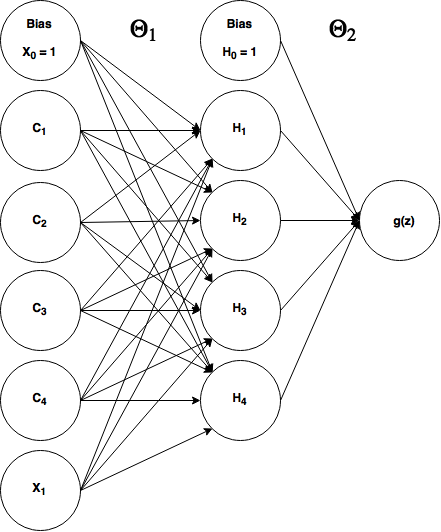

Simple Recurrent Neural Network
Re-submission Note: I originally submitted an RNN post but realized I made some major mistakes (I'm learning as I go). This is almost a complete re-do. One of the issues was that the RNN was not training properly, and I have not been able to get it to reliably train with my own implementation of gradient descent, so here I will calculate the gradients and hand those off to a scipy optimizer to find the weights.
Assumptions:¶
I'm assuming you already know how to build a simple neural network (e.g. to solve XOR) and train it using backpropagation. I have a previous post covering backpropagation/gradient descent and at the end of that tutorial I build and train a neural network to solve the XOR problem, so I recommend making sure you understand that because I am basing the RNNs I demonstrate here off of that. I also assume you have a functional understanding of Python/numpy.
Summary & Motivations:¶
This blog is my journey into learning the fundamentals of machine learning and other quantitative principles and applications and is generally in chronological order of my learning. After I successfully learned how to make feedforward neural networks and train them, I really wanted to learn how to make recurrent neural networks (RNNs). I understood that they were for temporal/sequential data and thus they could learn relationships through time. But I could not for the life of me figure out how to make the jump from a feedforward neural net to an RNN until I watched this youtube video: https://www.youtube.com/watch?v=e2sGq_vI41s (which I highly suggest you watch) by Jeff Heaton. Then I understood that RNNs can be implemented almost exactly like an ordinary feedforward neural network. I will re-explain some of the contents of that video here as I build a simple recurrent (Elman) neural network to solve a temporal version of the XOR problem (my favorite toy problem). I will also show you how to do basic time series/sequence prediction with a mini-mini-char-RNN implementation.
Converting to Sequential Data: XOR¶
We're going to build a simple recurrent neural network to solve a sequential/temporal version of the XOR problem.
Just as a reminder, here is the truth table for XOR.
| $x_1$ | $x_2$ | $y$ |
| $0$ | $0$ | $0$ |
| $0$ | $1$ | $1$ |
| $1$ | $0$ | $1$ |
| $1$ | $1$ | $0$ |
So normally, in a feedforward neural network, we would feed each training example as a tuple $(x_1, x_2)$ and we would expect an output $h(x)$ that closely matches $y$ if the network has been trained. As review, here's what our ordinary feedforward XOR architecture looks like:
 In an RNN, we're going to add in the time dimension. But how? Well we simply reformat our training data to be in a time-dependent sequence.
In an RNN, we're going to add in the time dimension. But how? Well we simply reformat our training data to be in a time-dependent sequence.
Here's our new (temporal) training data:
| $x$ | $y$ | $t$ |
| $0$ | ? | $0$ |
| $0$ | 0 | $1$ |
| $1$ | 1 | $2$ |
| $1$ | 0 | $3$ |
| $0$ | 1 | $4$ |
| $...x_n$ | $...y_n$ | $...t_n$ |
Where $x ... x_n$ represents our training data, $y...y_n$ are the corresponding expected values, and $t ... t_n $ represents our time steps. I arranged a sequence of bits [0 0 1 1 0] such that we can XOR the current bit and the previous bit to get the result. For every-time step our RNN is going to make output the XOR of the previous 2 bits, so notice that after the first bit $y=?$ because there is no previous bit to XOR, so we just ignore what the RNN outputs. But for $x=0, t=1$ we see that $y=0$ because XOR(0,0)=0. Also notice how $time$ is in discrete, integer, steps. Some algorithms may actually have continous time implementation and that's something I'll likely explore in a future post. Let's take another look at our sequential data written horizontally as numpy code:
X = np.matrix('[0;0;1;1;0]')
Y = np.matrix('[0;0;1;0;1]') #first bit should be ignored, just arbitrarily putting 0
So what do we do with our sequential XOR data and what does our neural network look like? Well, we're simply going to feed each (one at a time) $x$ value into our neural network and expect one output value at a time. Instead of having 2 input units (excluding bias), we only need one now:

What's that loop and $t-1$ thing? Well it means we're going to take our output from the hidden layer at time $t_n$ and feed it back into our hidden layer as additional input at $t_{n+1}$ (the next time step), or we could rephrase that to say that our hidden layer input at $t_n$ includes the output of the hidden layer from $t_{n-1}$ (the previous time step).
You might be wondering how this is any more useful than an ordinary feedforward NN, and the answer is it's not really. For a problem like XOR, I can't think of a reason why you'd ever want to use an RNN over a feedforward. We're just using it here because it's familiar and I'm a reductionist. But after we get this down, we'll move onto something where RNNs really shine: sequence prediction (in our case, predicting the next character in a sequence).
The Elman Neural Network¶
An Elman network is in the class of "simple recurrent neural networks" (presumably because they really are simple, with no frills) and it's the type of RNN we're going to build to solve our temporal XOR problem. Here's what it looks like when applied to our XOR problem:
where $\theta_1$ refers to the weights between the input layer and the hidden layer (a 6x4 matrix) and $\theta_2$ refers to our weights in between the hidden layer and our output layer (a 5x1 matrix).
Okay so everything should make sense here except those 4 units labeled $C_1 - C_4$. Those are called context units in the parlance of simple RNNs. These context units are additional input units that feed the output from $t_{n-1}$'s hidden layer back into $t_n$'s hidden layer. They're treated exactly like a normal input unit, with adjustable weights. (At $t = 0$ there is no history to remember, so we have to initialize our network's context units with something, generally 0s.) Notice that we have the same number of context units as we do hidden units, that's by design and is simply the architecture of an Elman network.
So what we've done here by adding context units that feed the previous time step's state into the current time step is to turn that diagram with the t-1 loop into essentially an ordinary feedforward neural network. And since it's a feedforward neural network, we can train it exactly like we do with a feed forward XOR neural network: backpropagation (it often get's called backpropagation through time but it's just a different name for the same thing).
Let's walk through the flow of how this works in the feedforward direction for 2 time steps.
- 1. $t=0$. Start with $x_1 = 0$ (first element in our list), intialize $C_1 - C_4$ to input 0s.
- 2. Feed those inputs (from bottom to top, $x_1, c_4, c_3, c_2, c_1, B_1$): [0,0,0,0,0,1] into the hidden layer (of course we multiply by $\theta_1$).
- 3. The hidden layer outputs $a_4, a_3, a_2, a_1, B_2$. We'll then store these values (except bias, $B_2$) in another temporary vector for the next time step.
- 4. Then our output unit uses the hidden layer outputs to produce the final output, $g(x)$
- 5. $t=1$ (next time step). So still $x_1 = 0$ (second element in our list), intialize $C_1 - C_4$ to the stored outputs of $H_1 - H_4$ from the last time we ran the network forward.
- 6. Feed those inputs (from bottom to top, $x_1, c_4, c_3, c_2, c_1, B_1$): [0, $H_4^{t-1}, H_3^{t-1}, H_2^{t-1}, H_1^{t-1}$, 1] into the hidden layer.
- 7. The hidden layer outputs $a_4, a_3, a_2, a_1, B_2$. We'll then store these values in the temporary vector for the next time step.
- 8. Then our output unit uses the hidden layer outputs to produce the final output, $g(x)$
Important Notes: As mentioned before, we treat the context units just like ordinary input units, that means they have weighted connections between them and the hidden layer, but their input does not go through any activation function nor do we manipulate those values in anyway before we feed them back in the next time step.
Let's build it (updated)¶
So as mentioned before, when I originally posted this article I attemped to train it using ordinary backpropagation/gradient descent (with momentum), and it was not reliably working. So rather than posting some code that may or may not work for you, I'm going to use scipy's optimize functions to help out the training (and even then it has issues converging sometimes). RNNs are infamously difficult to train compared to NNs. (We'll graph the cost function to see why later.)
If you have taken Andrew Ng's machine learning course, then you should be familiar with Matlab's 'fminunc' (and `fmincg`) optimizer. We're going to use scipy's version, `fmin_tnc` (I'll explain how it works later). Let me just walk through the major points of the following implementation
- I have a cost function defined in a separate file which accepts an 'unrolled' theta vector, so in the cost function we have to assign theta1 and theta2 by slicing the long thetaVec. This cost function returns the cost ('J') and the gradient (an unrolled vector containing theta1_grad and theta2_grad).
- In the main code to follow, we give scipy's `fmin_tnc` our cost function and some initial weights and it quickly finds an optimal set of weights. `fmin_tnc` will return the optimal weights as an unrolled vector.
- After we define theta1 and theta2 from the optimal weights returned, we run the network forward on a different sequence of bits to see if it really learned how to XOR the sequence one step at a time.
import numpy as np
from sigmoid import sigmoid
from scipy import optimize
import cost_xorRNN as cr #I defined the cost function in a separate file
X = np.matrix('[0;0;1;1;0]') #training data
Y = np.matrix('[0;0;1;0;1]') #expect y values for every pair in the sequence of X
numIn, numHid, numOut = 1, 4, 1
#initial, randomized weights:
theta1 = np.matrix( 0.5 * np.sqrt ( 6 / ( numIn + numHid) ) * np.random.randn( numIn + numHid + 1, numHid ) )
theta2 = np.matrix( 0.5 * np.sqrt ( 6 / ( numHid + numOut ) ) * np.random.randn( numHid + 1, numOut ) )
#we're going to concatenate or 'unroll' theta1 and theta2 into a 1-dimensional, long vector
thetaVec = np.concatenate((theta1.flatten(), theta2.flatten()), axis=1)
#give the optimizer our cost function and our unrolled weight vector
opt = optimize.fmin_tnc(cr.costRNN, thetaVec, args=(X, Y), maxfun=5000)
#retrieve the optimal weights
optTheta = np.array(opt[0])
#reconstitute our original 2 weight vectors
theta1 = optTheta[0:24].reshape(6, 4)
theta2 = optTheta[24:].reshape(5, 1)
def runForward(X, theta1, theta2):
m = X.shape[0]
#forward propagation
hid_last = np.zeros((numHid, 1)) #context units
results = np.zeros((m, 1)) #to save the output
for j in range(m):#for every input element
context = hid_last
x_context = np.concatenate((X[j,:], context))
a1 = np.matrix(np.concatenate((x_context, np.matrix('[1]'))))#add bias, context units to input layer
z2 = theta1.T * a1
a2 = np.concatenate((sigmoid(z2), np.matrix('[1]'))) #add bias, output hidden layer
hid_last = a2[0:-1, 0]
z3 = theta2.T * a2
a3 = sigmoid(z3)
results[j] = a3
return results
Xt = np.matrix('[1;0;0;1;1;0]') #test it out on some new data
print(np.round(runForward(Xt, theta1, theta2).T))
Cool! It worked. Remember, ignore the first bit of the output, it can't XOR just 1 digit. The rest of the sequence [1 0 1 0 1] matches with XOR of each pair of bits along the sequence. You might have to run this code a couple of times before it works because even when using a fancy optimizer, this thing is hard to train. Also try changing how we initialize the weights. Unfortunately scipy's `fmin_tnc` doesn't seem to work as well as Matlab's `fmincg` (I originally wrote this in Matlab and ported to Python; `fmincg` trains it alot more reliably) and I'm not sure why (email me if you know).
Also note I imported "sigmoid" which is a separate file that only contains the sigmoid function and 'cost_xorRNN' which is the cost function.. I'll reproduce both below so you can run everything on your own.
#sigmoid.py
import numpy as np
def sigmoid(x):
return np.matrix(1.0 / (1.0 + np.exp(-x)))
#cost_xorRNN.py
import numpy as np
from sigmoid import sigmoid
def costRNN(thetaVec, *args):
X = args[0]
Y = args[1]
numIn, numHid, numOut = 1, 4, 1
#reconstitute our theta1 and theta2 from the unrolled thetaVec
theta1 = thetaVec[0:24].reshape(numIn + numHid + 1, numHid)
theta2 = thetaVec[24:].reshape(numHid + 1, numOut)
#initialize our gradient vectors
theta1_grad = np.zeros((numIn + numHid + 1, numHid))
theta2_grad = np.zeros((numHid + 1, numOut))
#this will keep track of the output from the hidden layer
hid_last = np.zeros((numHid, 1))
m = X.shape[0]
J = 0 #cost output
results = np.zeros((m, 1)) #to store the output of the network
#this is to find the gradients:
for j in range(m): #for every training element
#y = X[j+1,:] #expected output, the next element in the sequence
y = Y[j]
context = hid_last
x_context = np.concatenate((X[j], context)) #add the context units to our input layer
a1 = np.matrix(np.concatenate((x_context, np.matrix('[1]'))))#add bias, context units to input layer; 3x1
z2 = theta1.T * a1; #2x1
a2 = np.concatenate((sigmoid(z2), np.matrix('[1]'))) #add bias, output hidden layer; 3x1
hid_last = a2[0:-1, 0];
z3 = theta2.T * a2 #1x1
a3 = sigmoid(z3)
results[j] = a3
#Backpropagation:::
#calculate delta errors
d3 = (a3 - y)
d2 = np.multiply((theta2 * d3), np.multiply(a2, (1 - a2)))
#accumulate gradients
theta1_grad = theta1_grad + (d2[0:numHid, :] * a1.T).T
theta2_grad = theta2_grad + (d3 * a2.T).T
#calculate the network cost
for n in range(m):
a3n = results[n].T
yn = Y[n].T
J = J + (-yn.T * np.log(a3n) - (1-yn).T * np.log(1-a3n)) #cross-entropy cost function
J = (1/m) * J
grad = np.concatenate((theta1_grad.flatten(), theta2_grad.flatten()), axis=1) #unroll our gradients
return J, grad
Everything should look fairly familiar if you've gone through my post on gradient descent and backpropagation, or already have a decent handle on building an XOR-capable feedforward network, but let me walk through the important/new parts of the code.
1. Every training iteration, we temporarily save the hidden layer outputs in `hid_last` and then at the start of the next training iteration, we initialize our context units to what we stored in `hid_last`.
context = hid_last
2. We have 4 context units, we add/concatenate them with our 1 input unit $X_1$ (and the bias of course), so our total input layer contains 6 units. This means our `theta1` is a 6x4 matrix (6 inputs projecting to 4 hidden units). Our hidden layer has 4 hidden units + 1 bias, so `theta2` is a 5x1 matrix. Other than these manipulations, the network is virtually identical to an ordinary feedforward network.
3. In case the 'unrolling' of matrices is unclear... When we unroll theta1 and theta2 into a single vector, `thetaVec`, we simply flatten those vectors into a 1 dimensional sequence and concatenate them. So `theta1` is a 6x4 matrix (24 total elements) which we flatten to a 24 element vector, and we likewise flatten `theta` (5x1 = 5 elements) to a 5 element vector, then concatenate them in order to produce a 29 element vector, `thetaVec`. Thus the first 24 elements of this vector are `theta1` and the last 5 arre `theta2`, so we can rebuild our original vectors by slicing up `thetaVec` and using `.reshape()` to give us matrices of the proper dimensions.
4. Let's discuss the scipy optimizer.
opt = optimize.fmin_tnc(cr.costRNN, thetaVec, args=(X, Y), maxfun=2000)
Scipy's optimizer `fmin_tnc` just wants the reference to our cost function (i.e we're passing the object itself, not calling the function, hence we don't do `cr.costRNN(...)`. But if we do that, how do we pass in the arguments it expects? Well `fmin_tnc` will assume that the first argument of our cost function is supposed to be the unrolled theta vector and thus the 2nd argument to `fmin_tnc` is `thetaVec` which we randomly initialize. The optmizer will iteratively modify and improve the thetaVec we originally pass in.
But wait, our cost function also expects `X` and `Y` parameters! We defined the second argument in our cost function to be `*args` which essentially allows us to accept a tuple of arguments there, and that's what `fmin_tnc` is going to do. We give `fmin_tnc` an `args=()` parameter which is a tuple of additional arguments to pass into our cost function. In our case, we just want to pass in our X and Y vectors.
The 4th parameter we give to `fmin_tnc` is `maxfun=5000` which refers to the maximum number of times the optimizer is allowed to call our cost function. It isn't necessary to set this, but I decided to set it to be higher than default to allow it to hopefully find a better optimum.
What does `fmin_tnc` return to us? It returns 3 items by default in an array. The first is the only thing we really care about, our optimal weights stored in an unrolled vector. Hence I retrieve it with this line: `optTheta = np.array(opt[0])` The other 2 return values are the number of times it called our cost function, and a return code string. You can see the documentation here: http://docs.scipy.org/doc/scipy-0.14.0/reference/generated/scipy.optimize.fmin_tnc.html
Why is it so difficult to train this thing?¶
import matplotlib.pyplot as plt
import numpy as np
import cost_xorRNN as cr
%matplotlib inline
thetaVec_f = np.linspace(-1.0, 10.0, 100)
thetaVec_all = np.array([ -18.37619967, 124.9886293 , 0.69066491, -2.38403005,
-2.3863598 , 34.07749817, -4.0086386 , -99.19477153,
5.28132817, 154.89424477, 17.32554579, -64.2570698 ,
16.34582581, -20.79296525, -21.30831168, -15.76185224,
4.64747081, -65.70656672, 13.59414862, -53.70279419,
113.13004224, -33.56398667, 0.7257491 , -9.27982256,
-18.29977063, 129.48720956, -37.57674034, -30.04523486,
-90.35656788])
thetaVec_sample = [np.concatenate((thetaVec_all[0:2], np.array([theta_]), thetaVec_all[3:]), axis=0)
for theta_ in np.nditer(thetaVec_f)]
Xs = np.matrix('[0;0;1;1;0]')
Ys = np.matrix('[0;0;1;0;1]')
zs = np.array([cr.costRNN(np.array(theta_s).T, *(Xs, Ys))[0] for theta_s in thetaVec_sample]).flatten()
ax = plt.subplot(111)
#ax.set_yscale('log') #Try uncommenting this to see a different perspective
ax.set_ylabel('Cost')
ax.set_xlabel('thetaVec[2]')
plt.scatter(thetaVec_f, zs)
plt.show()
![](data:image/png;base64,iVBORw0KGgoAAAANSUhEUgAAAYIAAAEPCAYAAABP1MOPAAAABHNCSVQICAgIfAhkiAAAAAlwSFlz
AAALEgAACxIB0t1+/AAAGKZJREFUeJzt3X+0XWV54PHvk0AgRCImWNBKB1ZXnaVM/BGsQwWH6xQE
O0obf6GrtFFbbMeuRkl0CswaSdeytbaCGG2XBUGwAjNTxJbWFoLWS21tixJSIqC2jnYACzihEBSI
aJ75Y+94T27uvTnnnnvuu/fZ389aZ2Wfvfe557kk7Ge/7/O+747MRJLUXUtKByBJKstEIEkdZyKQ
pI4zEUhSx5kIJKnjTASS1HHFEkFE/PuIuL3n9UhEbCgVjyR1VTRhHkFELAHuA16cmfeUjkeSuqQp
XUOnAl83CUjS4mtKIngDcE3pICSpi4p3DUXEMqpuoedm5reLBiNJHXRQ6QCAVwC3zZQEIqJ8AUOS
Wigzo99zm5AI3ghcO9vBQX6ZpomIzZm5uXQc89Xm+NscOxh/aWMQ/0A30UVrBBGxgqpQfH3JOCSp
y4q2CDLzu8CRJWOQpK5ryqihcTVZOoAhTZYOYAiTpQMY0mTpAIY0WTqAIU2WDmAxFR81NJeIyDbX
CCSphEGvnbYIJKnjTASS1HEmAknqOBOBJHWciUCSOs5EIEkd14QlJiT1KSJOh1WbqncPTcKqiXr7
osy8qVRcajfnEUgtUCWAFb8NS18AW5bADuAyYEt9xtt2w7I7YclOk4IGvXaaCKSGmrr7370alh4P
zz0EfhVYD7wGOLPevgk4G3h//ckNj8OudSaD7hr02mnXkNRAVRJY+Sm4eDl8hCoB3DDL2ZdSJYH1
e3csh42bqDKEdEAmAqmRVm2qksB6phLAW5m62B8HbKi3v9XzuZuoEgdrI+J0WwXqh11DUoP0FIPX
wsWr9+/62QFcvgfYDg9/sioW7+06OucQuAq7iGSNQGqpqe6gLcsHLQbXCeTqqeQBVVLYeHPmzpcv
4q+hBrBGILVWb3fQXht3AtvgsYsyvzvrnX1m3hSxehtw2tTeHQBrI1ZvdSSR5mIikBprDcC2/u/o
H7oINpwM9LYoVgOnwYaTI8JuIs3IriGpIfbtGoL59PHPXGMAu4m6xa4hqYV65gzcDe+gqgXsGrg7
pz7/pqo7qLebSJpd0UQQEUcAHwWOBxJ4S2b+fcmYpMW275wBqFoCDw/ZjTO9m+jyPcBqh5RqJkW7
hiLiKuCWzLwiIg4CVmTmIz3H7RrS2Kvu3i8+baG7cfZflgIcUtoNrXlUZUQ8FXhpZl4BkJnf700C
koZTXewP2VklgfVUry3Lpxatkyolu4aOA74dER8Dng/cBrw9Mx8rGJNUQG83DtR37RcVDUmdUqxr
KCJeBPwd8JLM/GJEXALsysx395xj15A6Ydry0gs25n8hRiKpfdo0auhe4N7M/GL9/jrgvOknRcTm
nreTmTk5+tCk0dv34s9FoxjaWU00i3X1InTMZySSmi8iJoCJeX++cLH4r4Ffzsyv1Rf85Zn5Gz3H
bRFoLJW6Ux9Vy0PN0qYWAcCvA1dHxDLg68CbC8cjLZL9lpMY+dLRMwxTdbaxgMKJIDP/EfjJkjFI
3bH4yUftULpFIHWUI4XUHK41JBWy2P31jiDqDp9HIGlWFou7wUQgSR3XmiUmJEnNYCKQFlFEnB6x
emv1itONRU1g15C0SJpUrG1SLFp4bZtQJnVIk8bxNykWlWbXkCR1nC0CadE0aRJZk2JRadYIpEXU
pHH8TYpFC8t5BJLUcc4jkCQNxEQgSR1nIpCkjjMRSB3nDGNZLJY6zBnG48lisdRAzb3rXrWpSgLr
qV5blk8NKVVXOKFMGjGfFaymK5oIIuKbwC7gB8CTmfnikvFIo9HkdX2cYazyLYIEJjLzocJxSJ2U
mTdFxLo6MQG7nGHcQUWLxRHxDeBFmblzluMWi9V6FmS12Fq1xERE/B/gEaquoT/MzMumHTcRaCy4
ro8WU9ueR3BSZv5rRDwduDkivpKZn+89ISI297ydzMzJxQxQWgj1hd+Lv0YiIiaAiXl/vinzCCLi
QuA7mXlRzz5bBJI0oNbMI4iIwyLi8Hp7BfByYEepeCSpq0p2DR0FfCoi9sZxdWZuLRiPJHVSY7qG
ZmLXkLS4LGqPh1aNGjoQE4G0eBzmOj7aNmpIUmM0eQa0RslF5ySp42wRSKq57lBXWSOQ9EMWi8eD
xWJJ6rjWTCiTJDWDiUAakeY+lUzal11D0gg4Jl8lOY9AagTH5Ks97BqSpI6zRSCNhGPy1R7WCKQR
cUy+SnEegSR1nPMIJEkDMRFImpHzILrDriFJ+3EeRLs5j0DSAnAeRJfYNSRJHVe8RRARS4EvAfdm
5qtKxyMJnAfRLcVrBBGxETgBODwzz5x2zBqBVIjzINqrVfMIIuJZwJXAbwEbp7cITASSNLi2zSP4
APAuYE/hOCSps4rVCCLilcCDmXl7REzMcd7mnreTmTk54tAkqVXqa+jEvD9fqmsoIn4b+AXg+8Ch
wErgk5n5iz3n2DUkSQNqVY3gh0FEnAK80xqBJA2vbTWCXuUzkiR1UCNaBLOxRSBJg2tzi0CSVICJ
QJI6zkQgSR1nIpCkjjMRSJqTD6gZf44akjQrH1DTTo4akgoav7vnVZuqJLCe6rVl+dSKpBoXxZ9H
II2Lqbvni/fePZ8cEd49q/FMBNKCGcfHO/qAmi4wEUiaVWbeFBHr6oQG7PIBNWPIYrG0QCysqila
ufrobEwEahsf7zicaf/9JmHVBOxeDQcDS3ZO7VuU4639+zMRSBqZAyW64S7kTwJLj4cth8AO4DLg
HOAq4P1M7dvC6I9Dm1t0A187M7Oxryq88nH48uUrAU6HlY/BlVm9DnsCjrgNVtw29efKJ6pjmxJW
1n8emfvum+34ifWfmfDqevvVM+xbjONZb6/aWvq/+zz/rnKQ8w84jyAi/qiffZLGXe+cgqOBww6B
X1oLy9fCJWthzdrqbn498A2qO+tvUN1t9+6b7fgzF/9XEtDfqKH/0PsmIg4CThhNOJLa4VKqC/gN
TF3IbxjyZ74VOLvePg7YQNV1885p+xbjOHRpqOysNYKIuAA4n2r88OM9h54ELs3M80YenDUCqTH2
HRX1EeBXqS7+Z1IlgpuoLuS9/e2D9NEDvG03LLtz33qCxeJBLXixOCJ+ZzEu+rN8t4lAapCpYvDu
1VVh95xDFvhC3tqLb5OMIhGcDGzPzO9ExC8ALwQ+mJn/MlyofQRnIpAaa9+k4IW8SUaRCHYAzwfW
AFcClwOvy8xThoiTiDgUuAU4BFgG/Glmnj/tHBOBJA1oFKuPfj8z9wA/B/x+Zn4YOHy+Ae6VmU8A
L8vMFwDPA15Wtz4kSYuon1FDj9aF47OBl0bEUqp24NAy87F6cxmwFHhoIX6uJKl//bQIzgJ2A2/J
zPuBHwV+byG+PCKWRMR24AHgc5l510L8XElS//paYiIijgZ+Ekjg1sx8cEGDiHgq1diz8zJzsmd/
Ar/Zc+pk73FJEkTEBDDRs+vChS4Wv56qBXBLves/Ae/KzD8eKNIDBRLxP4DHM/P9PfssFkvSgEYx
augO4NS9rYCIeDrw2cx83pCBHklViH44IpZTtQh+MzM/23OOiUCSBjTotbOfYnEA3+55v7PeN6xn
AFdFxBKqWsUf9SYBSdLi6CcR3AjcFBHXUCWAs4C/HPaLM3MHsHbYnyNJGs5caw39BHBUZv5NRLwG
OKk+9DBwTWb+88iDs2tIkga2YDWCiPg0cH5m3jFt//OA38rMVw0VaT/BmQgkaWALObP4qOlJAKDe
d9x8gpMkNc9cieCIOY4dutCBSJLKmCsRfCki3jp9Z0ScA9w2upAkSYtprhrB0cCngO8xdeE/gWq1
0HWZ+a8jD84agSQNbEEnlEVEAC+jelxlAndm5l8NHWWfTASSNLgFn1lckolAbTH1kBbw4SwqzUQg
LbJ9n+UL9UPP15kMVMoolpiQNKdVm+Di5dUD3AFYDhs3Ua2fJTVeP88jkCSNMVsE0jzt+/D2Dbup
RtRRdw1dVDQ4aQDWCKR52L8u8LbdsOxOWLLTYrFKs0YgLYr96gKHwMadmTtfXjIqaT6sEUgDiIjT
I1ZvxSXUNUZsEUh9muoOung57AA29By1LqD2MhFIfduvOwjYuBPYBrusC6i1TATSvK0B2GZdQG1n
IpD6UHULrVgNG/bww9qa3UEaD8USQUQcA3wc+BGqBe0uzcwtpeKRZrPvUNEdwDv2ANth1wV2B2kc
lGwRPAmcm5nbI+IpwG0RcXNm3l0wJmkG02sDa5ZUQ0VNAhoPxYaPZub9mbm93v4OcDfwzFLxSNM5
VFRd0YgaQUQcC7wQ+IeykUgVh4qqS4ongrpb6Drg7XXLYPrxzT1vJzNzcpFCU6c5VFTtERETwMR8
P180EUTEwcAngU9k5p/MdE5mbl7UoNRpPQ+YmdYd5FBRNVd9gzy5931EXDjI50uOGgrgcuCuzLyk
VBzSXnYHqatKtghOAs4G7oiI2+t952fmjQVjUqfZHaRuKpYIMvNvcNE7NZrdQeqG4sViqQmcOawu
MxGo85w5rK4zEUjOHFbH2UcvSR1ni0Cd5cPnpYoPr1cn+fB5jTMfXi/1xYfPS3tZI5CkjrNFoI56
6CLYcDJQdw1ZF1B3WSNQp/QsKgc8NAmrJupt6wIaG4NeO00E6oz9C8QbHodd60wAGjcWi6VZ7Vcg
Xg4bNwEmAnWaxWJJ6jhbBOoEF5WTZmci0NhzUTlpbiYCdYCLyklzsUYgSR1ni0Ad4OQxaS7OI9DY
cvKYuqpVE8oi4grgvwAPZuaaGY6bCDQvTh5Tlw167SxdI/gYcEbhGDSWVm2qksB6qteW5VOtA0m9
iiaCzPw88G8lY5CkrrNYrDFlgVjqV+MTQURs7nk7mZmThUJRC0wViFcBD70HNk5UR3ZZINbYiogJ
YGLeny89aigijgX+zGKxhmWBWKq4+qg6zNVFpfkoWiyOiGuBLwDPjoh7IuLNJeORpC4q3jU0F7uG
NAi7hqRKqyaUHYiJQP2aKhLvXg0HA0t2OoNYXWWNQJ0z1RK4uKcl8LAtAalPJgKNAYvE0jBKLzEh
SSrMFoHGgLOIpWFYLFZrucy0NDNHDakTHCoqzc5RQ+oIC8TSQrFYLEkdZ4tALWWBWFoo1gjUKhaI
pQOzWKyxZYFY6o/FYo0xC8TSKFgslqSOs0WgVqi6hVashg17+OENjAViaSGYCNR4+9YGdgDv2ANs
h10XWB+QhmciUAtMrw2sWQIbd5oEpIVhjUCNFRGnR6zeCqwtHYs0zmwRqJH2fdjMDmBDz1FrA9JC
KpoIIuIM4BJgKfDRzHxfyXhU3tSEsVVrpw0VBTbuBLbBLiePSQuoWCKIiKXAh4FTgfuAL0bEDZl5
9yJ890zPt53smaVab3t84Y/P9ZkVr4GVL4CLl8BHpv2trQHYlrnz5UhaWJlZ5AX8FHBjz/vzgPOm
nZMj+N7TYeVjsCnhyIQrs9peOW3b4wt//ECfObF+nwk39px7ZVZ/Z5xe6t+rL19teg167SwZ6GuB
y3renw18aJhfpr/vXbW1urC8uueiM9O2xxf++CCfyTpBrPp/1d+ZScCXr35fg147S9YIsp+TImJz
z9vJzJwcSTRqgLeyb03gssdh18+n9QBpThExAUzM9/MlE8F9wDE9748B7p1+UmZuXtiv3bt88TnL
4Z31vuOYGpWyd/scPL7Qxw/0mS1UDUMnjEmDqG+QJ/e+j4gLB/l8sdVHI+Ig4KvATwPfAm4F3pg9
xeJRrT5qsbipxWKXlJYWQquWoY6IVzA1fPTyzHzvtOMjSQSSNM5alQgOxEQgSYMb9NrpEhOS1HEm
AknqOBOBJHWciUCSOs5EIEkdZyKQpI4zEUhSx5kIJKnjTASS1HEmAknqOBOBJHWciUCSOs5EIEkd
ZyKQpI4zEUhSx5kIJKnjTASS1HEmAknquCKJICJeFxF3RsQPImJtiRgkSZVSLYIdwDrgrwt9/6KI
iInSMQyjzfG3OXYw/tLaHv+giiSCzPxKZn6txHcvsonSAQxponQAQ5goHcCQJkoHMKSJ0gEMaaJ0
AIvJGoEkddxBo/rBEXEzcPQMhy7IzD8b1fdKkgYTmVnuyyM+B2zKzG2zHC8XnCS1WGZGv+eOrEUw
gFmDHeQXkSTNT6nho+si4h7gRODTEfGXJeKQJBXuGpIkldf4UUMR8XsRcXdE/GNEXB8RTy0d04FE
xBkR8ZWI+KeI+I3S8QwiIo6JiM/VE/6+HBEbSsc0HxGxNCJuj4jWDUyIiCMi4rr63/1dEXFi6ZgG
ERHn1/9+dkTENRFxSOmYZhMRV0TEAxGxo2ffqoi4OSK+FhFbI+KIkjHOZZb4B75mNj4RAFuB4zPz
+cDXgPMLxzOniFgKfBg4A3gu8MaIeE7ZqAbyJHBuZh5P1XX3ay2Lf6+3A3cBbWzyfhD4i8x8DvA8
4O7C8fQtIo4FzgHWZuYaYCnwhpIxHcDHqP5f7XUecHNmPhv4bP2+qWaKf+BrZuMTQWbenJl76rf/
ADyrZDx9eDHwz5n5zcx8EvifwM8WjqlvmXl/Zm6vt79DdRF6ZtmoBhMRzwJ+BvgocwxGaKL67u2l
mXkFQGZ+PzMfKRzWIHZR3UwcFhEHAYcB95UNaXaZ+Xng36btPhO4qt6+Cvi5RQ1qADPFP59rZuMT
wTRvAf6idBAH8KPAPT3v7633tU59d/dCqn9MbfIB4F3AngOd2EDHAd+OiI9FxLaIuCwiDisdVL8y
8yHgIuD/At8CHs7Mz5SNamBHZeYD9fYDwFElgxlSX9fMRiSCuj9uxwyvV/Wc89+B72XmNQVD7Ucb
uyL2ExFPAa4D3l63DFohIl4JPJiZt9Oy1kDtIGAt8AeZuRb4Ls3umthHRPw48A7gWKqW5FMi4ueL
BjWErEbTtPL/6UGumU2YR0BmnjbX8Yh4E1VT/6cXJaDh3Acc0/P+GKpWQWtExMHAJ4FPZOaflI5n
QC8BzoyInwEOBVZGxMcz8xcLx9Wve4F7M/OL9fvraFEiAF4EfCEzdwJExPVUfydXF41qMA9ExNGZ
eX9EPAN4sHRAgxr0mtmIFsFcIuIMqmb+z2bmE6Xj6cOXgJ+IiGMjYhlwFnBD4Zj6FhEBXA7clZmX
lI5nUJl5QWYek5nHURUp/6pFSYDMvB+4JyKeXe86FbizYEiD+gpwYkQsr/8tnUpVtG+TG4D19fZ6
oFU3Q/O5ZjZ+HkFE/BOwDHio3vV3mfm2giEdUES8AriEasTE5Zn53sIh9S0iTqZaHvwOpprE52fm
jeWimp+IOIVqCZMzS8cyiIh4PlWhexnwdeDNbSoYR8R/o7qA7gG2Ab9cD5xonIi4FjgFOJKqHvBu
4E+B/w38GPBN4PWZ+XCpGOcyQ/wXUo0SGuia2fhEIEkarcZ3DUmSRstEIEkdZyKQpI4zEUhSx5kI
JKnjTASS1HEmAknqOBOBxkJEPDUi/mu9PTHocwgiYn29nMCBzrlm2r4jI+LBelmOQb7vB/WickfX
s3A/Xa8h/+WIeG/PeedGxL9ExIcG+fnSIEwEGhdPA4aZcf4mDrzc9vXAaRGxvGffa4Eb5jFz9rHM
XFsvKQHwu/XzB14InFQvE0BmfoBqtqs0MiYCjYvfAX48Im4Hfpdq1cs/ru+yP7H3pIg4ISImI+JL
EXFjfUf+WqrF0q6u79IPjYh3R8St9Sq4fwiQmY8CtwCv6vneNwDXRsTT66eK3Vq/XlJ/31PqJaXv
qJ8YtW564Jn5eGbeUm8/SbUsQ+/S5W1cRVVtkpm+fLX+Bfw7YEe9fQrwMNUdfgBfAE4CDq63V9fn
nUW1FhTA56ieqrX35z2tZ/vjwCvr7dcA19fbz6RabXYJcA1wUr3/x6gW7QN4H3Bxz886ov7z0Vl+
jyOo1hc6tmffeuBDpf8b+xrfVyOWoZYWQEzbvjUzvwUQEdup1sd/BDge+Ey1MCZLqR6eMtPP+M8R
8S6qJ2ytoloB9M+pHvLxBxFxOPB64LrM3BMRpwLPqX8uwOERsYJqGeCz9u7MORYvq5/odS3wwcz8
5iC/vDQME4HG1e6e7R8w9W/9zsx8ySyfSYCIOBT4feCEzLwvIi6kerYBmfl4RNwIvJrqAn9u/dkA
/mNmfq/3B9aJod+unUuBr2bmlj7PlxaENQKNi0eBw+c4nsBXgadHxIlQPYAnIp7b8/mV9fah9Z87
6ye1vY59n1J1LbAR+JHM/Pt631Zgw94T6qWkAW4Gfq1n/xEzBRcR76m//9yZjkujZCLQWMjqiVh/
GxE7qIrF+62vnlUh9rXA++ruotuBn6oPXwl8JCK2AU8AlwFfBm5k/2c2fwZ4BvC/evZtAF5UF4Tv
BH6l3v8e4Gl10Xk7MDE9roh4FnAB8BxgW0TcHhFvGey/gDR/Po9AKiAiHs3MuVowvee+iaqb6tdH
G5W6yhaBVMaueqjqgSaxnUv1zOLWPKFM7WOLQJI6zhaBJHWciUCSOs5EIEkdZyKQpI4zEUhSx/1/
yA7extP08XAAAAAASUVORK5CYII=)
You don't really need to understand the code behind this graph. Essentially what I'm doing is taking the set of optimal weights returned from the optimization function, and then changing the third weight (arbitrarily chosen) in the unrolled weight vector to between the values of -1 to -10 and calculating the cost for each new set of weights (but of the 29 total weights, only one individual weight is changed). So we're only looking at the cost as a function of 1 individual weight. The graph looks different if you look at a different weight, but the point is, this is not a nice cost surface. If our initial weight lands somewhere left of 6, then we'll probably be able to gradient descent down to the minimum, but if it lands to the right, we'll probably get stuck in that local minimum. Now imagine all 29 weights in our network having a cost surface like this and you can see how it gets ugly. The take-away here is that RNNs have a lot of local optima that make it really difficult to train with the typical methods we use in feedforward networks. Ideally, we want a cost function that is smooth and convex.
Let's build a mini, mini, mini char-RNN¶
What's "mini, mini, mini char-RNN" ? If you're familiar with Karpathy's charRNN (http://karpathy.github.io/2015/05/21/rnn-effectiveness/) then you'll have an idea. We're going to build the simple RNN that predicts the next character in a short word like "hello" as presented on his blog. We're just going to modify the RNN we built above with a few key changes:
1) There is no longer a distinct Y vector of expected values. Our expected values are the next character in the sequence. So if we feed our RNN 'hell' we expect it to return 'ello' to complete the word we trained it on. So $y = X[j+1, :]$.
2) Since we have only have 4 characters in our "vocabularly", we'll represent them as binary vectors of length 4. I.e. our binary encoding (arbitrarily assigned) is: h = [0 0 1 0], e = [0 1 0 0], l = [0 0 0 1], o = [1 0 0 0]
3) We're going to expand the hidden layer from 4 to 10. Seems to make training faster.
4) Thus the input layer will now contain: 4 inputs + 10 context units + 1 bias = 11 total. And the output will contain 4 units since each letter is a vector of length 4.
As before, I'll reproduce the code below (two separate files: RNNoptim.py and cost_charRNN.py; but you could put it all in one file if you want) and explain the important points.
#cost_charRNN.py OUR COST FUNCTION FILE
import numpy as np
from sigmoid import sigmoid
def costRNN(thetaVec, *args):
X = np.matrix(np.array(args))
numIn, numHid, numOut = 4, 10, 4
numInTot = numIn + numHid + 1
theta1 = thetaVec[0:(numInTot * numHid)].reshape(numInTot, numHid)
theta2 = thetaVec[(numInTot * numHid):].reshape(numHid+1, numOut)
theta1_grad = np.zeros((numInTot, numHid))
theta2_grad = np.zeros((numHid + 1, numOut))
hid_last = np.zeros((numHid, 1))
m = X.shape[0]
J = 0
results = np.zeros((m, numOut))
for j in range(m-1): #for every training element
#y = X[j+1,:] #expected output, the next element in the sequence
y = X[j+1, :]
context = hid_last
x_context = np.concatenate((X[j, :], context.T), axis=1)
a1 = np.matrix(np.concatenate((x_context, np.matrix('[1]')), axis=1)).T#add bias, context units to input layer; 3x1
z2 = theta1.T * a1; #2x1
a2 = np.concatenate((sigmoid(z2), np.matrix('[1]'))) #add bias, output hidden layer; 3x1
hid_last = a2[0:-1, 0];
z3 = theta2.T * a2 #1x1
a3 = sigmoid(z3)
results[j, :] = a3.reshape(numOut,)
#Backpropagation:::
#calculate delta errors
d3 = (a3.T - y)
d2 = np.multiply((theta2 * d3.T), np.multiply(a2, (1 - a2)))
#accumulate gradients
theta1_grad = theta1_grad + (d2[0:numHid, :] * a1.T).T
theta2_grad = theta2_grad + (a2 * d3)
for n in range(m-1):
a3n = results[n, :].T.reshape(numOut, 1)
yn = X[n+1, :].T
J = J + (-yn.T * np.log(a3n) - (1-yn).T * np.log(1-a3n))
J = (1/m) * J
grad = np.concatenate((theta1_grad.flatten(), theta2_grad.flatten()), axis=1)
return J, grad
That's our cost function file. It accepts an unrolled theta vector and the input data and returns the cost and the gradients. It is virtually the same as before besides the changed layer architecture and the fact that our $y$ (expected output) is just $X[j+1]$
import numpy as np
from sigmoid import sigmoid
from scipy import optimize
#Vocabulary h,e,l,o
#Encoding: h = [0,0,1,0], e = [0,1,0,0], l = [0,0,0,1], o = [1,0,0,0]
X = np.matrix('0,0,1,0; 0,1,0,0; 0,0,0,1; 0,0,0,1; 1,0,0,0')
numIn, numHid, numOut = 4, 10, 4
numInTot = numIn + numHid + 1
theta1 = np.matrix( 1 * np.sqrt ( 6 / ( numIn + numHid) ) * np.random.randn( numIn + numHid + 1, numHid ) )
theta2 = np.matrix( 1 * np.sqrt ( 6 / ( numHid + numOut ) ) * np.random.randn( numHid + 1, numOut ) )
thetaVec = np.concatenate((theta1.flatten(), theta2.flatten()), axis=1)
opt = optimize.fmin_tnc(costRNN, thetaVec, args=(X), maxfun=5000)
optTheta = np.array(opt[0])
theta1 = optTheta[0:(numInTot * numHid)].reshape(numInTot, numHid)
theta2 = optTheta[(numInTot * numHid):].reshape(numHid+1, numOut)
def runForward(X, theta1, theta2):
m = X.shape[0]
#forward propagation
hid_last = np.zeros((numHid, 1)) #context units
results = np.zeros((m, numOut))
for j in range(m):#for every input element
context = hid_last
x_context = np.concatenate((X[j,:], context.T), axis=1)
a1 = np.matrix(np.concatenate((x_context, np.matrix('[1]')), axis=1)).T#add bias, context units to input layer
z2 = theta1.T * a1
a2 = np.concatenate((sigmoid(z2), np.matrix('[1]'))) #add bias, output hidden layer
hid_last = a2[0:-1, 0] #ignore bias
z3 = theta2.T * a2
a3 = sigmoid(z3)
results[j, :] = a3.reshape(numOut,)
return results
#This spells 'hell' and we expect it to return 'ello' as it predicts the next character for each input
Xt = np.matrix('0,0,1,0; 0,1,0,0; 0,0,0,1; 0,0,0,1')
print(np.round(runForward(Xt, theta1, theta2)))
That's cool. Do you remember our encoding? h = [0,0,1,0], e = [0,1,0,0], l = [0,0,0,1], o = [1,0,0,0]
So we gave it 'hell' and it returned 'ello' ! That means, when it received the first character, [0,0,1,0] ("h"), it returned [ 0. 1. 0. 0.] ("e"). It knew what letter is supposed to come next! Neat.
Again, this is virtually identical to the network we built for XOR just that our input layer accepts binary 4 element vectors and returns 4 element vectors representing characters. We also increased the hidden layer size to 10.
Closing Words¶
If you want to take this farther, try increasing the number of characters you can encode by increasing the input and output layers. I tried (not shown here) up to 11 element vectors, using the letters "e t a o i n s h r d" (which are the top 10 highest frequency letters in english) and the space character. With just those 11 characters you can encode alot of words, even sentences. While I got it to work on individual words, training became increasingly difficult for longer input sequences (I tried expanding the hidden layer). My guess is that it just doesn't have enough 'memory' to remember more than a couple of characters back, therefore it won't be able to learn the character sequences of a long word or sentence. Hence why anyone doing 'real' character prediction (like the Karpathy charRNN) uses a much more sophisticated RNN, an LSTM network.
I also attempted to build a character generator from this code, so that we train it on a word or small sentence and then tell it to generate some sequence of characters based on a seed/starting character or word. That didn't work well enough to present here, but if I get it working, I'll make a new post.
Do note that I wrote this code for readability, thus it doesn't follow best coding practices like DRY.
Also, like I mentioned before, I had to resort to using a scipy optimizer to help train the network rather than use my own implementation of gradient descent like I did with the normal feedforward XOR network in my previous post. I suppose I was experiencing the exploding/vanishing gradient problem and I just didn't have a sophisticated enough gradient descent implementation. If you have any expertise to lend here then please email me (outlacedev@gmail.com). And please email me if you spot any errors.
References:¶
- https://www.youtube.com/watch?v=e2sGq_vI41s (Elman Network Tutorial)
- http://karpathy.github.io/2015/05/21/rnn-effectiveness/